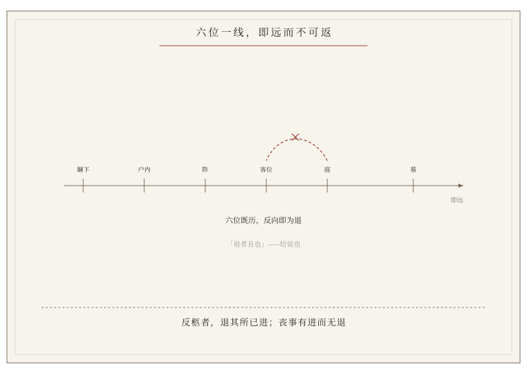

檀弓上 · 三·五十六 · 第 259 课
曾子弔於負夏。主人既祖，填池，推柩而反之，降婦人而後行禮。從者疑之，問曾子，曾子為之說曰「祖者且也」。從者又問子游，子游舉「飯於牖下」至「葬於墓」六位，斷以「喪事有進而無退」。曾子聞之曰：「多矣乎，予出祖者！」
说什么事：一位客人來吊，主人为了显耀这位客人，把已经走到一半的出殡程序退回去重走。曾子替主人圆了一句，子游一句话把整条路摆出来，圆不下去。
落在哪一层：礼，兼及礼数与礼意。论「丧序不可退」。
为何编在此位：上节以「本末」收一段，此节以下五节转入「礼之变与礼之失」：负夏之失、袭裘之得、除丧之琴、讥废適、无文之礼。此为五节之首，先立「有进而无退」一义。
【经】曾子弔於負夏。主人既祖，填池，推柩而反之，降婦人而後行禮。從者曰：「禮與？」曾子曰：「夫祖者且也，且胡為其不可以反宿也？」從者又問諸子游曰：「禮與？」子游曰：「飯於牖下，小斂於戶內，大斂於阼，殯於客位，祖於庭，葬於墓，所以即遠也。故喪事有進而無退。」曾子聞之曰：「多矣乎，予出祖者！」
【注】负夏，卫地。祖谓移柩车去载处，为行始也。填池，当为「奠彻」，声之误也；奠彻谓彻遣奠、设祖奠。反于载处，荣曾子吊，欲更始。礼，既祖而妇人降，今反柩，妇人辟之，复升堂矣；柩无反而反之，而又降妇人，盖欲矜宾于此妇人，皆非。从者怪之。且，未定之辞。给说。明反柩非。多犹胜也，善子游言且服。
【疏】此一节论负夏氏葬礼所失之事。案《既夕礼》：启殡之后，柩迁于祖，正柩于两楹间，用夷床，柩北首；设奠于柩西，此奠谓启殡之奠。质明彻去启奠，乃设迁祖之奠于柩西。至日侧乃却下柩，载于阶间，乘蜃车；载讫，迁祖之奠设于柩车西，当前束。乃饰柩设披属引，彻去迁祖之奠，迁柩向外而为行始，谓之祖也。妇人降，即位于阶间，乃设祖奠于柩西。至厥明，彻祖奠，又设遣奠于柩车之西，然后彻之，苞牲取下体以载之，遂行。此是启殡之后至柩车出之节也。曾子吊于负夏氏，正当主人祖祭之明旦、既彻祖奠之后、设遣奠之时而来吊；主人荣曾子之来，乃彻去遣奠，更设祖奠，又推柩少退而返之向北，又遣妇人升堂；至明旦，妇人从堂更降，而后乃行遣车礼。从曾子者意以为疑，问曾子云「此是礼与」；曾子既见主人荣己，不欲指其错失，为之隐讳云「夫祖者且也」——「且」是未定之辞，祖是行始，未是实行，且去住二者皆得，既得且住，何为不可以反宿，明日乃去？○注「给说」：《论语》云「御人以口给」，谓不顾道理、以捷给说于人也。○「多」犹胜也。曾子自知己说之非，闻子游之答是，故善服子游也，言子游所说出祖之事，胜于我所说出祖也。○皇氏、熊氏皆云曾子虽今日来吊，遥指昨日为既祖，于文赊缓，其义非也。
负夏 卫地。疏「负夏，卫地」。
既祖 祖祭已毕。祖是「移柩车去载处，为行始」，将行之始，不是已行。
填池 郑读为「奠彻」，声之误：彻去遣奠、更设祖奠。卢、王如字。
推柩而反之 把柩车推回载处。反，同「返」。
且 未定之辞。疏「且去住二者皆得」。
反宿 返回停一夜。宿，留。
饭於牖下 始死，含饭于牖下（室之南窗）。
小敛於戶內 小敛于户内，在堂。
大敛於阼 大敛于阼阶上，主位。
殯於客位 殡于西阶，宾位。
祖於庭 祖祭于庭。
即远 一步一步离生者愈远。即，就。
多矣乎 疏「多犹胜也」。胜过我所说。
曾子到负夏去吊丧。主人已经行过祖祭，正设遣奠，见曾子来，就把遣奠撤了、重设祖奠，又把柩车推回载处，让已经下阶的妇人再升堂，然后才行礼。
随从的人问：「这是礼吗？」曾子说：「祖嘛，就是『且』——还没定呢。既然还没定，为什么不可以推回去停一夜？」随从的人又去问子游：「这是礼吗？」子游说：「饭在牖下，小敛在户内，大敛在阼阶，殡在西阶，祖在庭，葬在墓——这六处，是一步一步把人送远。所以丧事只有向前，没有退回。」
曾子听见了，说：「子游说的比我说的强多了。我那句『出祖』，不如他。」
丧事有一条不可逆的轴：牖下、户内、阼、客位、庭、墓。六处不是六个地点，是一条线的六个刻度；每移一处，死者离家远一步，生者的位置也随之退一步。所以「推柩而反之」不是动作不雅，是把已经走过的刻度倒回去。
主人三重动作——彻遣奠更设祖奠、推柩返、遣妇人升堂再降——全为一客之荣。礼可以厚宾，不可以丧序为宾礼。
曾子「且」之一说，疏直断为「给说」：不顾道理，以捷给之说护人。护人之失是厚，造义以护人之失则伤礼。故子游不必斥主人，只把六位一摆，反柩之非自见。曾子一闻即服，「多矣乎，予出祖者」——不是认输，是认是。
第一层 六位一线 饭、小敛、大敛、殡、祖、葬，疏据《既夕礼》把祖前后节次说得极细：启殡、迁祖、正柩两楹间、夷床北首、设奠、质明彻启奠设迁祖奠、日侧却下柩载于阶间、乘蜃车、饰柩设披属引、彻迁祖奠、迁柩向外为行始、妇人降即位于阶间、设祖奠、厥明彻祖奠设遣奠、苞牲取下体、遂行。这一长串之所以要这么细，是要证明「祖」在程序里是「已定而将行」，不是「未定可返」。
第二层 荣宾之私与丧序之公 主人「荣曾子之来」，于是三重改序。疏言「皆非」：柩无反而反之，一非；既反之未回车南出，不合降妇人而降之，二非。两非都出在一个念：让人看见我这场丧办得体面。丧是给死者的，不是给来宾的。
第三层 「且」字之辨 「祖者且也」，字面不误：且者未定。误在以未定之辞消解已定之序。祖之名正取「将行之始」，将行而未行，正是「已定」。把「将行」读成「未定」，则一切程序都可返；程序可返，则丧无方向。疏断为「给说」，是因为这话不是解字，是为护人而造义。
第四层 闻善而服 「多矣乎，予出祖者」。曾子先为隐讳，后为自认，前后都是厚道：前之厚在人，后之厚在理。贤者之可学，不在不犯错，在闻是即服，且服得干脆——一句话，不辩解，不补充。
与今日何干 一件事做到一半，来了贵客，为了让贵客看见全流程，把已走的步骤退回去重演一遍。这不是古人的毛病。程序让位于场面，场面又让位于面子，最后没人在意这件事本来是为什么做的。此节给的尺很简单：仪式可以有来宾，仪式的方向不能为来宾改。
| 左 | 右 |
|---|---|
| 饭于牖下 | 始死 |
| 小敛于户内 | 在堂 |
| 大敛于阼 | 主位 |
| 殡于客位 | 宾位 |
| 祖于庭 | 将行 |
| 葬于墓 | 即远之极 |
| 推柩而反之 | 退其所已进 |
| 有进而无退 | 丧之轴不可逆 |
画负夏野外的出殡队列，视点平远。一辆柩车停在庭中偏南，车轮下压着新辙，车后一路辙印自北而来、到车前忽然断住，表示车曾被推回。车旁数位妇人正从阶上再下，衣裾未整。左侧一位老者（曾子，深衣、手扶杖）与两三名从者立着，从者侧身向一位中年士人（子游，冠端正、袖手）作问状。不写文字、不画人面细节。赭色只用在柩车车辕的一小段与断开的那截辙印。
